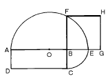
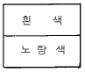
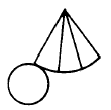
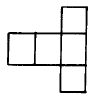
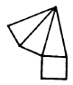
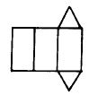
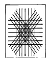

귀금속가공산업기사 (2004-08-08 기출문제)
1과목: 장신구디자인론
1. 다음 중 중성색은?
- 빨강
- 초록
- 주황
- 노랑
(정답률: 알수없음)

2. 다음 선의 느낌 중 동적이며 심리적 긴장감, 불확실의 느낌을 주는 것은?
- 수직선
- 수평선
- 사선
- 포물선
(정답률: 알수없음)
3. 색입체(color solid)에 관한 설명 중 올바른 것은?
- 색의 3속성을 3차원의 공간 속에 계통적으로 배열한것이다.
- 무채색의 명도 단계를 명색, 중명색, 암색의 순으로 나열한 것이다.
- 색광의 3원색을 혼합한 회전 색원판을 말한다.
- 색료 혼합의 2차 혼합색의 나열을 말한다.
(정답률: 84%)
4. 직사각형과 같은 면적의 정사각형 그리기에 관한 설명 중 잘못된 것은?

- AB를 연장하여 놓고 BC의 길이와 같은 BE를 정한다.
- AG의 2등분점 O를 구하여 AO를 반지름으로 하는 원호를 그린다.
- BC의 연장선과 원호와의 교점 F를 얻는다.
- BF는 구하는 정사각형의 한변이 되므로 BF=BG=FH=GH로 하면 된다.
(정답률: 80%)
5. 선반가공시 원통 절삭을 하는 물체의 중심은 도면의 어떤 위치로 선정하는 것이 좋은가?
- 수직방향
- 수평방향
- 경사방향
- 임의의 방향
(정답률: 82%)
6. 다음 그림과 같은 배색의 느낌은?

- 맑고 경쾌하다.
- 무게가 있다.
- 화려하다.
- 우울하다.
(정답률: 70%)
7. 한국 공예사에 대한 설명 중 잘못된 것은?
- 조선시대의 공예는 어떤 시대보다 귀족 중심이었고, 민족적이며 풍토적 특색도 나타나 있다.
- 고려시대의 상감 청자는 고려의 독창적 예술품종의 하나이며 선의 아름다움과 배색의 신비를 갖추고 있다.
- 신라시대의 순금 공예는 서남 아시아 스키트 시베리아적 문화에 영향을 받았으며, 순금 공예의 많은 유산을 남겼다.
- 백제시대는 찬란한 불교 문화의 영향아래 사찰 건축과 탑, 불상, 불구 등에서 눈부신 유산을 남겼다.
(정답률: 73%)
8. 도면의 배치를 평면도 밑에 정면도, 정면도 우측에는 우측면도를 놓았다면 몇 각법에 속하는가?
- 제 1각법
- 제 2각법
- 제 3각법
- 제 4각법
(정답률: 93%)
9. 색채가 주는 감정적인 효과에 대한 설명 중 잘못된 것은?
- 빨강, 주황, 노랑색은 따뜻한 느낌을 준다.
- 검정, 회색은 무겁게 느껴진다.
- 한색 계통은 화려한 느낌을 준다.
- 난색 계통의 고채도색은 흥분을 유발시킨다.
(정답률: 82%)
10. 트윈 반지(Twin ring)에 대한 설명중 맞는 것은?
- 반지안에 진주 2개를 가깝게 셋팅하는 디자인
- 반지를 2개로 만들어 끼우는 반지
- 반지 내부에 보석을 2개 이상 셋팅하는 반지
- 반지를 재료를 달리하여 같은 디자인으로 2개를 끼게 하는 디자인
(정답률: 70%)
11. 무채색에서만 볼 수 있는 색의 속성은?
- 채도
- 색상
- 명도
- 농도
(정답률: 80%)
12. 자연의 법칙에 거슬리지 않는 우아한 시각적 특징을 지니고 있으며, 간결하고 질서있는 아름다움을 느끼게 하는 형태는?
- 기하학적 형태
- 유기적 형태
- 우연적 형태
- 불규칙 형태
(정답률: 80%)
13. 다음 중 혼합할수록 명도와 채도가 낮아지는 것은?
- 가산혼합
- 감산혼합
- 회전혼합
- 병치혼합
(정답률: 80%)
14. 동일한 요소를 규칙적으로 반복했을 때에 얻을 수 있는 디자인의 결과로서 관계가 없는 것은?
- 강조
- 율동
- 통일
- 균형
(정답률: 73%)
15. 도면에서 치수기입이 집중되는 곳은?
- 우측면도
- 정면도
- 평면도
- 좌측면도
(정답률: 알수없음)
16. 채도가 높은색과 낮은색을 가지고 디자인 하면 어떠한 느낌을 주는가?
- 선명감과 안정감이 있다.
- 무겁고 침침한 느낌을 준다.
- 전체적으로 힘이 없고 약하다.
- 가볍고 화려한 느낌을 준다.
(정답률: 82%)
17. 다음 그림 중 삼각기둥의 전개도는?




(정답률: 100%)
18. 치수를 자에서 잰 후 제도지 위에 옮기거나 선, 원 등을 같은 길이로 분할하는 데 사용하는 제도용구는?
- 컴퍼스
- 디바이더
- 제도용자
- 운형자
(정답률: 100%)
19. 건축, 조경, 도시계획 등 인간의 삶의 질을 높이기 위한 디자인은?
- 시각 디자인
- 제품 디자인
- 환경 디자인
- 상업 디자인
(정답률: 82%)
20. 줄(chain), 펜던트(pendant), 걸쇠(clasp)등 3부분이 갖추어져 이루어진 목걸이의 유형은?
- bead type (연주형)
- chain type (체인형)
- link type (연결형)
- perpect type (완전형)
(정답률: 알수없음)
2과목: 보석재료 및 가공기법
21. 파세팅 연마기에서 96 인덱스 기어가 45˚ 인 경우 기어의 수는?
- 8
- 10
- 12
- 15
(정답률: 알수없음)
22. 합성 보석 제조방법 중 녹는점이 매우 높은 큐빅지르코니아의 결정을 성장시킬 때 사용하는 제조방법은?
- 베르누이법
- 융제용융법
- 열수성장법
- 스컬용융법
(정답률: 70%)
23. 콜롬비아 에메랄드에 들어있는 삼상 내포물에 해당하지 않는 것은?
- 흠(crack)
- 결정(crystal)
- 기포(bubble)
- 액체(liquid)
(정답률: 77%)
24. 호박에 관한 설명이 아닌 것은?
- 성분이 탄소 79 %, 수소 10.5 %, 산소 10.5 % 포함하고 있다.
- 색상은 밝은 것부터 어두운 황색, 갈색, 오렌지색등이 있다.
- 내포물 가운데 개미, 파리, 벌, 꽃 등이 포함되어 있는 것도 있다.
- 산지는 남아공화국에서 대량 산출된다.
(정답률: 67%)
25. 전체의 디자인이 거들 가장자리보다 위에 위치하는 보석 조각 방법은?
- 카메오(Cameo)
- 인탈리오(Intalglio)
- 셰비(Shevee)
- 쿠베드(Cuvette)
(정답률: 77%)
26. 보석가공 작업 중 사용되는 루페의 배율로 적합한 것은?
- 5x
- 7x
- 10x
- 20x
(정답률: 100%)
27. 문장을 조각하는데 주로 사용하는 기법은?
- 카메오
- 인탈리오
- 셰비
- 큐벳
(정답률: 77%)
28. 옥(Jade)가락지를 만드는 순서로 옳은 것은?
- 절단 - 그라인딩 - 샌딩 - 천공 - 광택
- 절단 - 천공 - 그라인딩 - 샌딩 - 광택
- 절단 - 그라인딩 - 천공 - 샌딩 - 광택
- 절단 - 샌딩 - 그라인딩 - 천공 - 광택
(정답률: 알수없음)
29. 큰 원석을 슬랩형으로 절단하는데 사용하는 장비는?
- 대절단기
- 소절단기
- 수직형 연마기
- 수평형 연마기
(정답률: 80%)
30. 12인치 대절단기 톱날로 절단할 수 있는 적당한 두께는？
- 5 ∼6 ㎝
- 6 ∼6.5 ㎝
- 8 ∼ 8.5 ㎝
- 12 ∼ 13 ㎝
(정답률: 73%)
31. 다이아몬드의 4C가 아닌 것은?
- 캐럿(carat)
- 컷(cut)
- 클레러티(clarity)
- 큐렛(culet)
(정답률: 82%)
32. 다음 중 유기질 보석은?
- 라피스 라줄리
- 쟈스퍼
- 호박
- 아콰마린
(정답률: 82%)
33. 강옥(corundum)을 루비(ruby)와 사파이어(sapphire)로 분류하는 기준은?
- 특수현상
- 색
- 투명도
- 화학성분
(정답률: 알수없음)
34. 접합석 검사에서 면의 반사를 줄이는 최상의 검사방법은?
- 형광
- 침적
- 레드링
- 포일백 검사
(정답률: 30%)
35. 성채 등 특수한 광학 효과를 지닌 원석을 연마할 때 사용되는 연마 형태는?
- 캐보션 커트(Cabochon)
- 스텝 커트(Step)
- 브릴리안트 커트(Billiant)
- 믹스드 커트(Mixed)
(정답률: 84%)
36. 초경림에 대한 설명 중 틀린 것은?
- 다이아몬드 분말과 금속분말을 혼합하여 압착한 것이다.
- 절단된 자국이 좁다.
- 철제 톱날이 부착되어 있다.
- 옥이나 오팔 절단에 사용된다.
(정답률: 46%)
37. 보석에서 가장 많이 볼 수 있는 광택은?
- 금강광택(adamantine)
- 유리광택(vitreous)
- 무요광택(dull)
- 견사광택(silky)
(정답률: 알수없음)
38. 캐보션 연마를 하는 이유는?
- 표면반사의 아름다움을 나타내기 위하여
- 중량을 살려주기 위하여
- 보석내부의 아름다움을 살려주기 위하여
- 다양한 형태를 묘사하기 위하여
(정답률: 100%)
39. 3각형, 5각형 파세트 연마에 적합한 인덱스 기어 휠은?
- 24
- 60
- 64
- 96
(정답률: 70%)
40. 다음 중 결정을 이루는 3요소는 ？
- 결정핵, 능, 격자
- 결정면, 능, 우각
- 결정면, 선열, 우각
- 결정핵, 선열, 망면
(정답률: 64%)
3과목: 귀금속재료 및 가공기법
41. 스터링 실버(stering silver)의 합금 비율은?
- 은(Ag) 70 % + 구리(Cu) 25 % + 망간(Mn)5 %
- 은(Ag) 87.5 % + 구리(Cu) 12.5 %
- 은(Ag) 97.5 % + 구리(Cu) 1 % + 망간(Mn)1.5 %
- 은(Ag) 92.5 % + 구리(Cu) 7.5 %
(정답률: 100%)
42. 토치불꽃의 종류 중 일반 용접에 가장 적합한 표준 불꽃은?
- 탄화불꽃
- 중성불꽃
- 산화불꽃
- 약산화불꽃
(정답률: 70%)
43. 그림과 같이 선을 쳐서 금, 은을 박아 넣는 상감기법은?

- 면상감
- 소입상감
- 포목상감
- 육상감
(정답률: 84%)
44. 채널 난물림의 설명이 바르게 된 것은?
- 이중테 난물림 같이 난발이 없다.
- 세팅시 보석 높이보다 조금 작은 지름 넓이의 고랑을 만든다.
- 양쪽에 생긴 둑을 줄질하면서 높이를 맞춘다.
- 미관도가 좋으나 연결셋팅이 어렵다.
(정답률: 67%)
45. 금속의 전연성을 이용하여 표면에 부조 등을 만드는 기법은?
- 조소
- 타출
- 상감
- 투조
(정답률: 70%)
46. 매몰제의 혼합(Mixing)에 관한 설명 중 틀린 것은?
- 플라스크 용적의 1.5배의 매몰제 파우더를 준비한다.
- 물과 매몰제의 혼합비에서 물이 적으면 건조후 주형이 거칠어 진다.
- 매몰제를 혼합할 때 물의 온도는 22℃정도가 적당하다.
- 혼합용 매몰제에 물을 부으며 휘젖는다.
(정답률: 알수없음)
47. 금의 회수 방법에서 금의 함량이 90(%)이거나 80(%) 이상일 때 많이 사용하는 방법은?
- 질산분석법
- 황산분석법
- 왕수법
- 염화수소법
(정답률: 알수없음)
48. 영국에서 1527년 금화제조용 합금의 품위로 제정된 22K는 정확히 몇 % 의 금의 함량을 나타내는가?
- 90.67
- 91.66
- 92.66
- 93.67
(정답률: 50%)
49. 용접 방법 중 야금(冶金)적 접합법에 속하지 않는 것은?
- 융접
- 납땜
- 압접
- 전접
(정답률: 39%)
50. 산화크롬(Cr2O3)가루를 유지로 굳혀 봉상으로 만든 연마제는?
- 청봉
- 황봉
- 적봉
- 백봉
(정답률: 84%)
51. 다음 각종 유해물질을 취급할 때 안전대책(예방책)에 관한 내용 중 가장 바람직하지 못한 것은?
- 왕수 : 통풍이 완전한 곳에서 취급하며, 폐기할 때 전문가에게 의뢰하거나 중화하여 폐기한다.
- 석면(석면판) : 자르거나, 다듬을 때는 가급적 먼지나 가루가 많이 발생하지 않도록 한다.
- 청산가리 : 가능하면 사용하지 않는다. 사용할 때는 완전한 환기시설 밑에서 하며, 해독제를 미리 준비한다.
- 왁스(Wax) : 소성시에는 소성로를 중심으로 완전한 환기가 되도록 하고, 하드왁스를 깎거나 연마할 때 가루를 흡입하지 않도록 한다.
(정답률: 64%)
52. 작업안전과 거리가 먼 것은?
- 산소병은 뉘어 놓으면 안된다.
- 장소에 따라 LPG와 산소를 함께 저장해도 좋다.
- 전기 시설이 가까이 있는 장소는 가스 시설과 장소를 달리한다.
- 산소 밸브에는 기름기가 묻거나 오물이 묻어서는 안된다.
(정답률: 75%)
53. 금속을 경(經) 금속과 중(重)금속으로 구분하는 방법은?
- 경도의 차이
- 전· 연성의 차이
- 강도의 차이
- 비중의 차이
(정답률: 62%)
54. 귀걸이 장식 중 뚫지 않는 형이 아닌 것은?
- 조임형
- 고리형
- 사슬형
- 자석형
(정답률: 46%)
55. 전동식 버프연마기의 적절한 회전속도(rpm)는?
- 700
- 1,000
- 1,700
- 2,500
(정답률: 알수없음)
56. 시계 부속 또는 디자인이 복잡한 장신구에 적합한 연마는?
- 버프연마
- 그라이더연마
- 손다듬연마
- 전해연마
(정답률: 알수없음)
57. 다음 중 금(Au)의 결정 구조는?
- 체심입방격자
- 조밀입방격자
- 면심입방격자
- 조밀육방격자
(정답률: 84%)
58. 분말상 유약에 유성 물질을 가하여 만든 것으로 묘화 칠보에 이용되며 사용할 때 기름과 유약이 분리된 것을 잘 흔들어 혼합해야 하는 유약은?
- 겔상 유약
- 유채 유약
- 에마리엔 유약
- 정제상 유약
(정답률: 67%)
59. 금납의 설명으로 잘못된 것은?
- 금-은-구리의 3원 합금으로 한다.
- 금에다 8 ~ 10%의 은을 합금한 금납만 금 합금에다 땜질하도록 권장한다.
- 땜질하려는 금보다 약 2캐럿(2K)정도 낮은 품위로 한다.
- 금납 중에서도 아연, 카드뮴을 가하면 유동성이 적어진다.
(정답률: 50%)
60. 매몰된 플라스크를 소성할 때 소성로의 최고 온도는?
- 630 ~ 650℃
- 660 ~ 680℃
- 690 ~ 700℃
- 730 ~ 760℃
(정답률: 67%)
4과목: 보석감별 및 감정
61. 세팅된 보석의 감별시 다음 사항 중 가장 측정(또는 추정)하기 어려운 사항은?
- RI
- SG
- Carat Weight
- 흡수 스펙트럼
(정답률: 47%)
62. 클래러티 등급을 매길 때에 고려해야 할 요소가 아닌 것은?
- 위치
- 크기
- 모양
- 내포물
(정답률: 42%)
63. 보석감정서에서 무하자 또는 플로리스(flawless)란 말의 뜻으로 적합한 것은?
- 일반인이 적절한 조명 하에서 육안으로 관찰하여 보석의 내부 및 외부에 아무런 하자가 없을 때
- 숙련된 보석감정사가 적절한 조명 하에서 육안으로 관찰하여 보석의 내부 및 외부에 아무런 하자가 없을 때
- 숙련된 보석감정사가 적절한 조명 하에서 10배율에서 확대 관찰하여 보석의 내부 및 외부에 아무런 하자가 없을 때
- 숙련된 보석감정사가 적절한 조명 하에서 현미경을 이용하여 10배율에서 45배율까지 확대 관찰하여 보석의 내부 및 외부에 아무런 하자가 없을 때
(정답률: 54%)
64. 금땜의 순도에 대한 설명 중 맞는 것은?
- 모재보다 1K 낮은 것이 사용된다.
- 모재보다 1K 높은 것이 사용된다.
- 모재보다 2K 낮은 것이 사용된다.
- 모재보다 2K 높은 것이 사용된다.
(정답률: 80%)
65. 다음 중 비중이 가장 높은 금속은?
- 금
- 은
- 백금
- 팔라디움
(정답률: 90%)
66. 멜레 사이즈가 0.1 ct 미만의 작은 다이아몬드를 fifties라고 불렀다면 이것은 몇 ct의 다이아몬드를 의미하는가?
- 0.01 ct
- 0.02 ct
- 0.04 ct
- 0.⑤ ct
(정답률: 75%)
67. 다음 보석재 중 메타믹트(metamict)로 형성된 물질은?
- 펠드스파 군
- 옵시디언
- 칼사이트
- 지르콘
(정답률: 알수없음)
68. 가닛과 유리가 접합된 더블릿에서 나타나는 효과는?
- 오일리 현상
- 레드링 효과
- 블라인드 효과
- 레드 포이 현상
(정답률: 75%)
69. 다음 비중에 관한 설명 중 맞는 것은?
- 같은 부피의 4℃의 물과 그 무게를 비교하는 것이다.
- 4℃의 물 1 cm3 의 무게는 0.4 g이다.
- 다이아몬드 비중이 3.52라는 것은 다이아몬드 1 cm3의 무게가 0.352 g 이라는 뜻이다.
- 같은 캐럿일 경우 사파이어가 자수성보다 비중이 크기 때문에 체적도 커진다.
(정답률: 54%)
70. 다음 중 산처리에 쓰이는 약산 용액을 만드는 방법은?
- 물과 산을 동시에 붓는다.
- 물을 먼저 붓고, 산을 나중에 붓는다.
- 산을 먼저 붓고, 물을 나중에 붓는다.
- 어느 것을 먼저 붓든지 관계 없다.
(정답률: 84%)
71. 황색을 띤 녹색으로 1.61의 굴절률과 반점이 있는 설탕같은 외관을 보이며, 표면 가까이 열침을 대면 표면이 액화되는 다공질인 것은?
- 왁스 처리된 터쿼이즈
- 터쿼이즈
- 플라스틱 처리된 터쿼이즈
- 염색된 터쿼이즈
(정답률: 70%)
72. 다음 스터링 실버(sterling silver)에 대한 설명 중 잘못된 것은?
- 주조성이 좋다.
- 가열하여도 잘 산화하지 않는다.
- 식기나 화폐 등에 쓰인다.
- 황화수소(H2S) 가스에 잘 변색되지 않는다.
(정답률: 64%)
73. 다음 중 다이아몬드 감정시 사용되는 루페(Loupe)에 대한 설명으로 맞는 것은?
- 배율이 높을수록 크게 관찰되므로 이상적이다.
- 일반적으로 더블렌즈를 많이 사용한다.
- 배율은 10배 정도가 이상적이다.
- 일반적으로 싱글렌즈를 많이 사용한다.
(정답률: 알수없음)
74. 다이아몬드 감정 환경으로 부적당한 것은?
- 벽의 색이 회색인 곳
- 보안이 잘 된 곳
- 사람의 출입이 빈번하지 않는 곳
- 공기나 태양 광선이 잘 통하는 곳
(정답률: 알수없음)
75. 다음 중 보석과 조흔색이 잘못 짝지어진 것은?
- 칼사이트 - 백색
- 다이옵사이드 - 흑색
- 말라카이트 - 밝은 녹색
- 라피스라즐리 - 엷은 청색
(정답률: 62%)
76. 금 14K의 품위에 있어서 합금물의 비율은?
- 58.5 %
- 51.5 %
- 41.5 %
- 25.0 %
(정답률: 65%)
77. 보석학에서 가장 자주 사용되는 현미경 조명법으로 보석의 배경을 어둡게 하고 옆에서 빛을 비추는 조명방법은?
- 명시야 조명
- 암시야 조명
- 수직 조명
- 확산 조명
(정답률: 알수없음)
78. 천연 에메랄드나 이미테이션 에메랄드를 구별하기 위해서 최초로 발명된 감별 기구는?
- 이색경
- 굴절계
- 컬러 필터
- 편광기
(정답률: 73%)
79. 다음 중 붕사(Borax)를 사용하는 목적이 아닌 것은?
- 용융금속에 산소의 침입을 막는다.
- 합금 속에 있는 산화금속을 용해한다.
- 온도를 쉽게 올려 준다.
- 금속의 표면을 깨끗이 한다.
(정답률: 47%)
80. 다음 중 라피스라줄리에 포함되어 있지 않은 광물은?
- 튤라이트
- 라주라이트
- 칼사이트
- 파이라이트
(정답률: 알수없음)